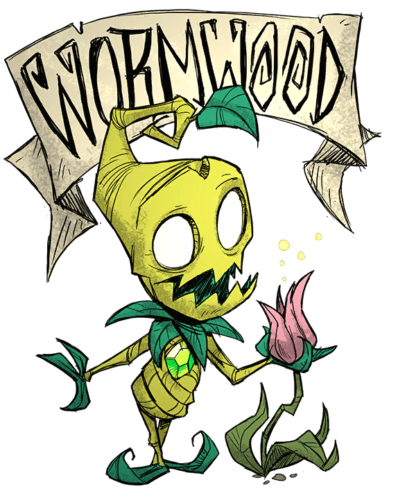

Marlxton's collection of "Don't survive" NFT's. Take a look, you might find something for yourself. The goal is to have fun and collect as many as possible.
WILSON

Wilson Percival Higgsbury is the first available playable character in Don't Starve and one of the playable characters in Don't Starve Together (DST). He's a witty scientist wannabe that has a sense of humor. He also has a peculiar haircut resembling the letter "W".
Read moreWILLOW

Willow is the Second playable Character in Don't Starve that can be unlocked via Experience, when the player reaches 160 XP. She is also one of the playable Characters in Don't Starve Together (DST). She is a young woman who is obsessed with fire.
Read moreWOLFANG
Wolfgang is the second playable Character in Don't Starve that can be unlocked via Experience, with 320 XP, and one of the playable Characters in Don't Starve Together. He is a simple-minded Strongman who is very boastful about his might.
Read moreWENDY

Wendy Carter is the third playable Character in Don't Starve that can be unlocked via Experience, with 640 XP, and one of the playable Characters in Don't Starve Together (DST). Wendy has a morbid personality; she always relates everything (even herself) to death and how depressing life is.
Read moreWX-78

WX-78 is the fifth playable Character in Don't Starve unlockable via Experience, with 960 XP. They are also one of the playable Characters in Don't Starve Together (DST). They are a self-sustaining automaton that hates all living matter. They may craft circuits and use them to gain special quirks.
Read moreWICKERBOTTOM
Wickerbottom is the fifth playable Character in Don't Starve that can be unlocked via Experience, with 1280 XP, and one of the playable Characters in Don't Starve Together (DST). She is an old, intelligent librarian who self-publishes and is able to identify many different types of fauna and flora by their scientific names.
Read moreWOODIE
Woodie is the sixth playable Character unlocked via Experience in Don't Starve, with 1600 XP. He is also one of the playable Characters in Don't Starve Together (DST). He is a stereotypical Canadian lumberjack with a love for chopping Trees and a mysterious curse.
Read moreWES
Wes is one of the two playable Characters that are not unlocked via Experience in Don't Starve and one of the 17 playable characters in Don't Starve Together (DST). He is a fragile French mime that uses pantomimes to communicate instead of speaking. Wes's purpose in the game is to provide a challenge to experienced players.
Read moreMAXWELL
Maxwell (AKA William Carter) is one of the six playable Characters that are not unlocked via Experience in the Don't Starve base game. The de-facto antagonist of the base game, if freed at the end of Adventure Mode, he returns to his dapper human form and is sent into the Constant as another survivor.
In addition to the Codex Umbra, which allows him to fragment his mind, Maxwell starts off with his own fighting gear and valuable items. Being a dapper fellow, his Sanity constantly increases over time. To make up for that, Maxwell only has a maximum Health of 75 points.
Read moreWAGSTAFF

Robert Wagstaff is a Character in single-player Don't Starve. He requires no Experience to unlock and is immediately available. He is a pivotal character in the game's lore, being the founder of the Voxola Radio Company and worked alongside WX-78 before they turned themself into a robot. Though he seems to be trapped in The Constant like any other survivor, Wagstaff seems to have brought himself there on purpose to seek the forbidden knowledge that the world contains.
Read moreWIGFRID
Wigfrid is one of the two playable Characters exclusive to the Reign of Giants DLC. She is the seventh Character to be unlocked via Experience, with 1920 XP. She is also one of the playable Characters in Don't Starve Together (DST). Although Wigfrid has the appearance of a valkyrie, she's just a stage actress.
Read moreWEBBER
Webber is one of the two playable Characters exclusive to the Reign of Giants DLC. He's the only one of the two that is not unlocked via Experience. He's also one of the playable Characters in Don't Starve Together. Webber looks like a humanoid spider, though he's actually a child that lives inside the spider that tried to eat him long ago.
Read moreWALANI
Walani is one of the four playable Characters exclusive to the Shipwrecked DLC. She is the eighth Character to be unlocked via Experience, with 2240 XP. She is a surfer with a relaxed personality. Her maximum Health is only 120 but her Hunger is 200, making up for the faster drain to it.
Read moreWILBUR
Wilbur is one of the four playable Characters exclusive to the Shipwrecked DLC. He is one of two Shipwrecked Characters that cannot be unlocked via Experience. He is an intelligent monkey, albeit unable to speak human languages, and is considered to be the king of monkeys.
Read moreWOODLEGS
Woodlegs is one of the four playable Characters exclusive to the Shipwrecked DLC. He is one of two Shipwrecked characters that can't be unlocked via Experience. He's a stereotypical pirate captain with two peg legs that hates staying too long on land and loves treasure
Read moreWILBA
Wilba is a playable Character exclusive to the Hamlet DLC. She is the daughter of Queen Malfalfa, making her the Princess of the Pig kingdom. She has also inherited the curse of being a Werepig from her father. Wilba is the only Hamlet character that cannot be unlocked via Experience..
Read moreWORMWOOD
He appears to be an animate plant, akin to Treeguards, though he has a green cut stone on the front of his chest. Wormwood is friendly while a little eccentric, addressing things such as insects as "Bzzters" and birds as "Tweeters." Wormwood has many unique abilities, and he has access to unique crafting recipes that can help with healing and defense. He is able to plant Seeds without the use of a Farm. He also seems to have some sort of kinship with plants, addressing most of them as "Friend," or things similar.
Read moreWHEELER

Maybelle Dorothea Wheeler is a Character exclusive to the Hamlet DLC. Wheeler is the tenth character to be unlocked via Experience, requiring 3200 XP to become available. She is an adventure-seeking aeronaut who crashed her hot air balloon and became lost in The Constant.
Read more